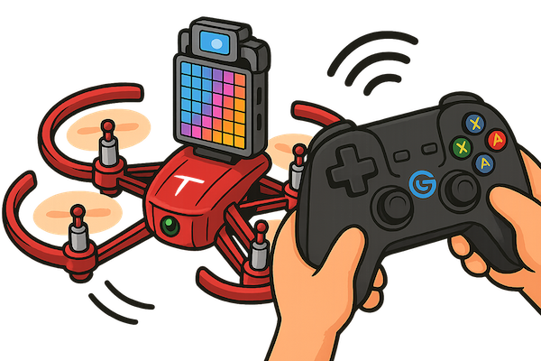
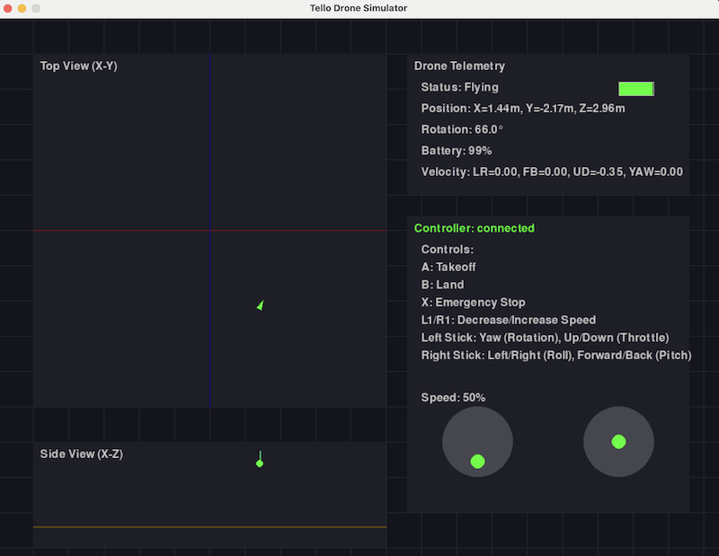

Tello controller navigation - Part 1
2025-05-07
- Learn how to simulate a Tello drone using Python and pygame—no real drone required
- See how to connect and control the simulator with a GameSir T1d controller
- Discover practical code architecture for drone control, easily swappable with a real Tello/TT
- Get insights into input smoothing, command mapping, and realistic flight physics
- Find out how simulation helps debug controller issues and speeds up development
- Includes code walkthroughs and a live demo video for hands-on understanding
Series: Code, Fly & AI
What happened with the Tello?
The whole point was to hook up the controller with the Tello/TT, but it was not as simple as I thought. Now that is behind us we can again focus on our original goal: control the RoboMaster TT with the GameSir T1d through a Python script running on a computer.

Simulation first
I am traveling right now, and didn’t bring my drone, but I did bring the controller so I could at least get some work done. What can we do without the Tello drone? We ask Claude.ai to whip up a simple simulator!
I am interested in the using simulators anyway. The software/model development cycle with an actual drone in the loop is a bit of a hassle. Especially later on with a larger drone. So, in the style of this blog, we start very simple with the most basic of simulators.
The end result
Before we dive into some of the code, let’s see how it looks like:

And you can see it in action here: Gamesir T1d controller with Tello drone simulation demo
It all looks a bit lame, but it has already been very useful!
First of all there was a nasty bug in the controller package that periodically told the drone to land (it pressed the A key out of nowhere every now and then).
Secondly, I needed to think about the architecture of the code, which doesn’t really change when we connect the actual drone.
The code is here: tello_controller_sim.py.
How does it work?
The application simulates a Tello drone’s physics and behavior, providing a visual interface that shows:
- Top-down and side views of the drone
- Telemetry data (position, rotation, battery)
- Controller state visualization
- Flight path trail
The simulation includes realistic features like:
- Gradual takeoff and landing sequences
- Battery consumption
- Physical constraints (can’t go below ground)
- Input filtering for smoother control
The code consists of three classes:
- TelloSimulator - Simulates the physics and state of a virtual drone
- FlightController - Handles controller input and sends commands to the drone
- DroneSimulatorApp - Main app that integrates everything with visualization
Let’s have a look at each class in detail:
TelloSimulator
This class creates a virtual model of a Tello drone with (more or less) realistic physics. This will be swapped out with the actual drone through the djitellopy library in my next post.
Key Properties:
position- 3D position vector [x, y, z] in metersrotation- Yaw rotation in degrees (0-360°)velocity- 4D vector [left/right, forward/back, up/down, yaw]is_connected,is_flying,battery- Drone state trackingis_taking_off,is_landing- Transitional states
Key Methods:
update(dt)- Updates position and state based on time deltatakeoff()- Initiates gradual ascent to target heightland()- Initiates gradual descent to groundemergency()- Immediately stops motors (safety feature)send_rc_control()- Accepts control values and updates velocity
The update() method handles all physics calculations:
- Different behavior during takeoff/landing phases
- Velocity-based position updates with proper trigonometry for directional movement
- Battery drain simulation
- Prevents clipping through the ground
FlightController
This class processes raw controller inputs and translates them into drone commands.
Key Features:
- Input smoothing with
filter_strength(0.8 = heavy smoothing) deadband(0.03) to ignore tiny accidental joystick movements- Speed control with
speed_multiplier(adjustable via L1/R1 buttons) - Fixed rate command sending (20Hz)
- Button edge detection (reacts to press, not hold)
- Mapping follows “European style” (right stick for primary movement)
Methods:
process_input()- Processes controller inputs with filteringprocess_buttons()- Handles button presses with edge detection
The control flow works like this:
- Read raw joystick values
- Apply deadband (zero out very small inputs)
- Apply smoothing filter
- Convert to integer values (-100 to 100)
- Send commands to drone at fixed intervals
DroneSimulatorApp
The main application class that brings everything together. It is more or less a pygame application that takes care of the control loop and visualization. The details are not too interesting.
What’s next?
In Part 2 of the Tello controller navigation I will replace the simulator with my RoboMaster TT. Read on…